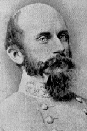

|

|

|
|
|
Confederate general Richard Stoddard Ewell was born in
Virginia. He attended West Point as a member of the Class of
1840, graduating thirteenth. In the United States Army,
Ewell served mostly with the cavalry in the West, including
limited action in the Mexican War. In 1861, he resigned his
commission in the U.S. Army to join the Confederacy.
Although Ewell eventually reached the rank of Lieutenant
General, he began his service as a relatively low-ranking
division commander under General Thomas J. "Stonewall"
Jackson. Ewell's units distinguished themselves in 1862 in
both the Shenandoah Valley campaign and in the defense of
Richmond, Virginia. In August of that year, Ewell traveled
north with Jackson to the Second Battle of Bull Run. There
he was shot in the right knee, an injury that eventually
resulted in the loss of his leg. Recuperating in Richmond,
Ewell, called "Old Bald Head" by his soldiers, was reunited
with his childhood sweetheart, Lizinka Campbell Brown, who
nursed him back to health. On May 24, 1863, Ewell married
Brown, and then returned to duty with the army.
In early May, while Ewell was recovering in Richmond,
Stonewall Jackson was wounded at Chancellorsville. He died
on May 10, and as a result Ewell assumed command of Lee's
Second Corps. On June 14, 1863, in his first battle after
returning to duty, Ewell won a spectacular victory at
Winchester. He was then ordered to join General Robert E.
Lee's army in Pennsylvania.
Ewell's crops successfully drove back Union forces on
July 1, 1863, but his failure to attack Federal troops on
Cemetery Hill led to severe criticism of his generalship. By
the third day, the Union victory was secured, and Lee
returned to Virginia. Ewell served in the Overland Campaign
of 1864, but illness led to his temporary retirement in May
of 1864. His last assignment was to command the defenses of
Richmond. Ewell was captured at Sayler's Creek on April 5,
1865, in the Appomattox campaign.
Released in July of 1865, Ewell retired to Spring Hill,
Tennessee. There, on a farm owned by his wife, Ewell lived
the life of a gentleman farmer, until contracting pneumonia
in winter of 1872. Lizinka tried again to nurse him back to
health, but instead she fell ill and died on January 22.
Ewell followed her two days later.
Source: Joan Waugh, ed., Facts on File Encyclopedia of American
History: Civil War and Reconstruction, 1856 to 1869 (New York: Facts on
File, 2003), 118-119.
|